מהו חיידק הליגיונלה ולמה הוא מסוכן?
כל מה שצריך לדעת על החיידק, דרכי ההדבקה, אוכלוסיות בסיכון והתקן הישראלי לבדיקה.
קראו עודמדריכים, תקנות ושאלות נפוצות בעולם הדיגום והבדיקות - ליגיונלה, מי שתייה, חיטוי צנרת, דיגום מזון, שפכים ומקוואות. ידע מעשי מהמעבדה, בשפה ברורה.
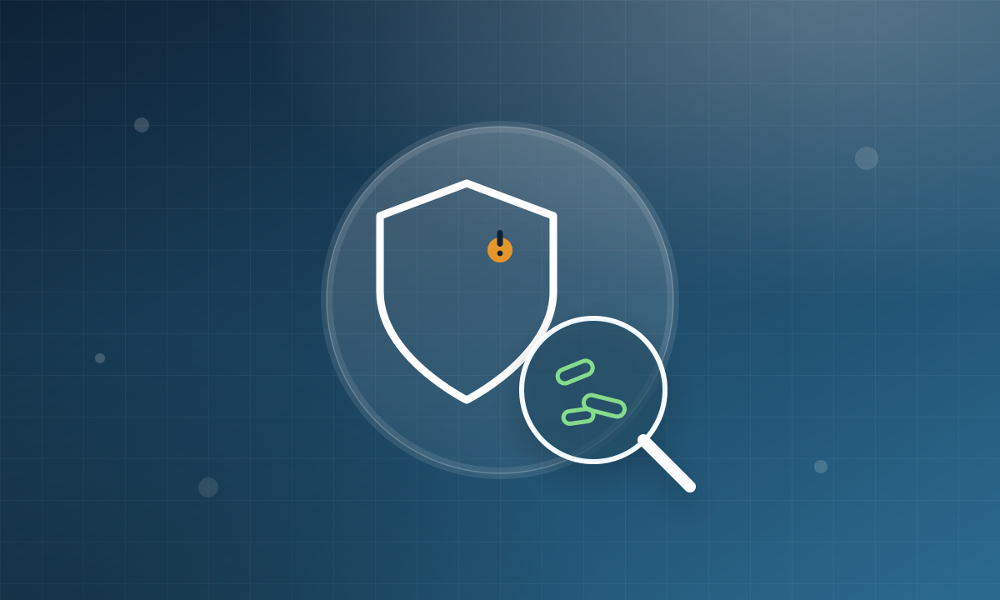
כל מה שצריך לדעת על החיידק, דרכי ההדבקה, אוכלוסיות בסיכון והתקן הישראלי לבדיקה.
קראו עוד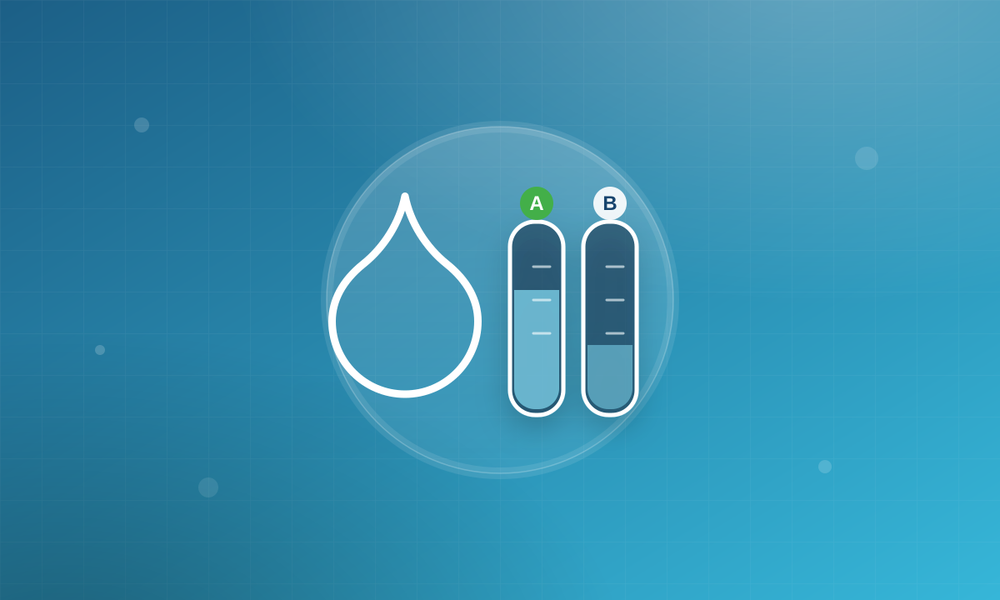
מה ההבדל בין הבדיקות, מתי כל אחת נדרשת וכל כמה זמן חובה לבצע אותן.
קראו עוד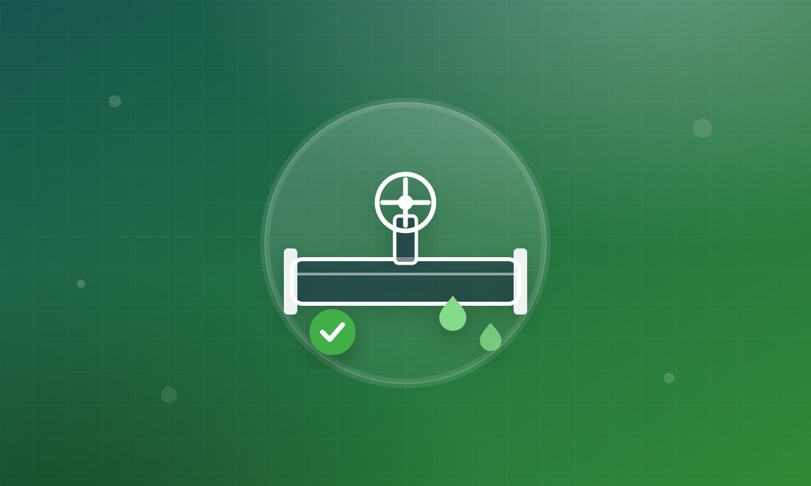
מה נדרש מקבלן לפני אכלוס, איך מתנהל תהליך החיטוי ואילו מסמכים מקבלים.
קראו עוד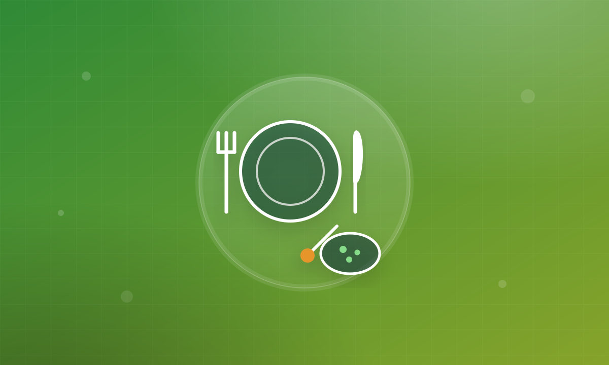
אילו בדיקות מזון ומשטחים נדרשות בעסק מזון, באיזו תדירות ולמה זה קריטי.
קראו עוד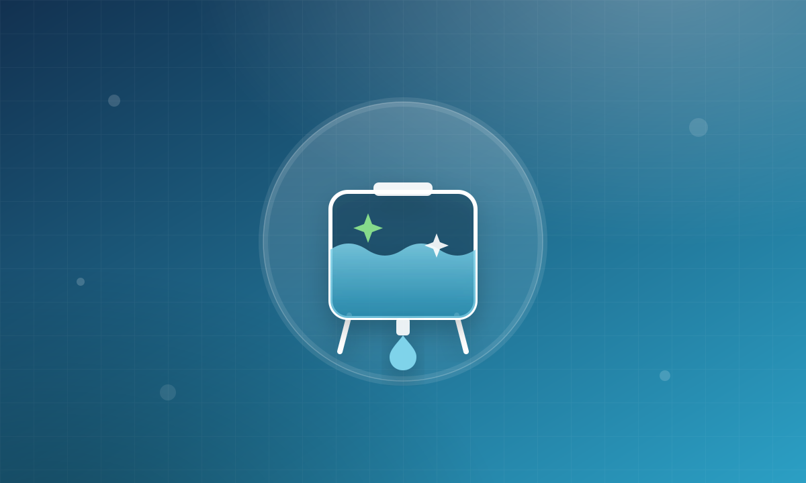
תדירות הניקוי לפי תקנות בריאות העם, סימני אזהרה ומה כולל תהליך חיטוי תקין.
קראו עוד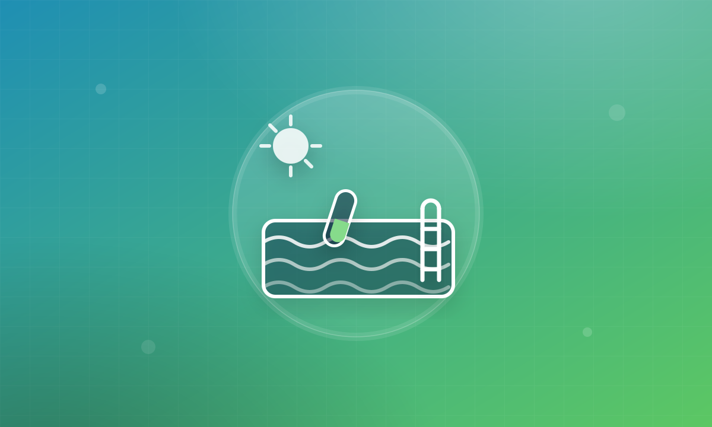
אילו פרמטרים נבדקים בבריכה, תדירות הדיגום והדרישות לפתיחת עונת רחצה.
קראו עוד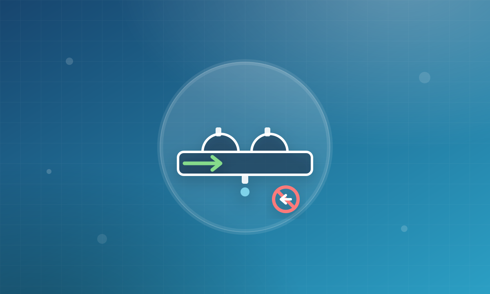
למה צריך מונע זרימה חוזרת, מי מחויב בהתקנה ובבדיקה תקופתית מוסמכת.
קראו עוד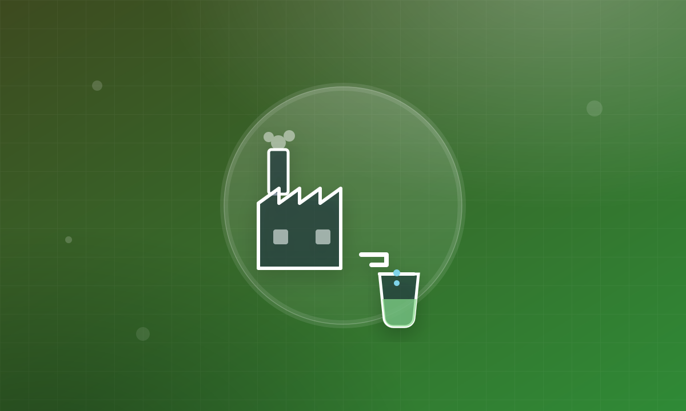
מה בודקים בשפכים תעשייתיים, איך נקבעים היטלי השפכים ואיך נמנעים מקנסות.
קראו עוד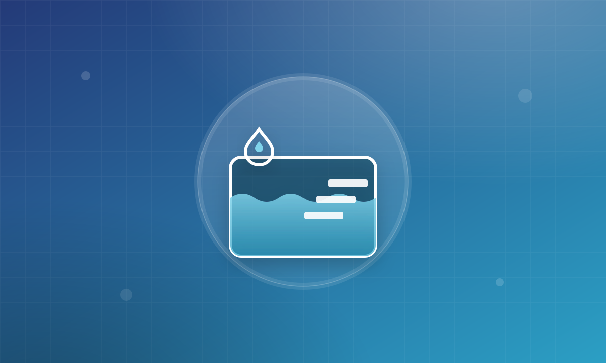
אילו בדיקות נדרשות במקווה ציבורי, תדירות הדיגום והקפדה על בטיחות הרוחצים.
קראו עוד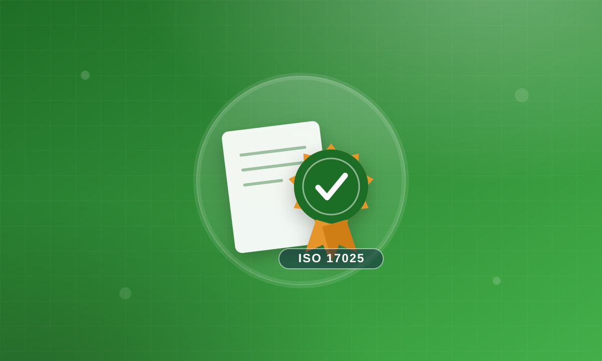
מה אומרת ההסמכה, איך היא מבטיחה אמינות תוצאות ולמה הרגולטור דורש אותה.
קראו עוד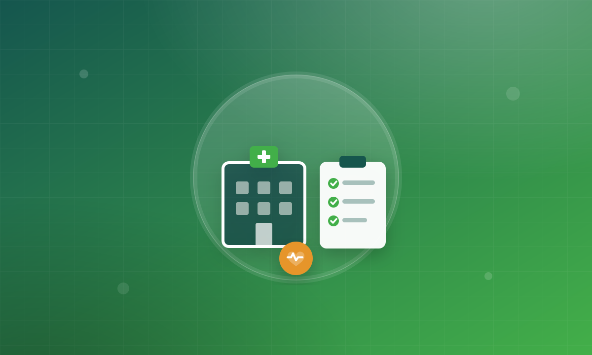
למה בתי חולים, בתי אבות ומרפאות חייבים תוכנית דיגום סדורה ומה היא כוללת.
קראו עוד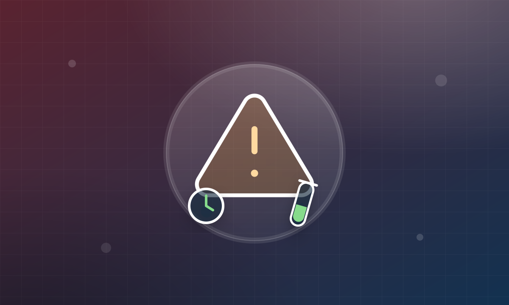
שלבי התגובה המיידית לזיהום, בדיקות PCR מהירות וחזרה לשגרה בטוחה.
קראו עודלא נמצאו מאמרים בנושא זה כרגע. נסו נושא אחר או צרו איתנו קשר לקבלת מידע.
צוות קיסר דיגום ישמח לייעץ לכם, לבנות תוכנית דיגום מותאמת ולהחזיר דוח תוצאות ברור עם המלצות לפעולה - בפריסה ארצית.